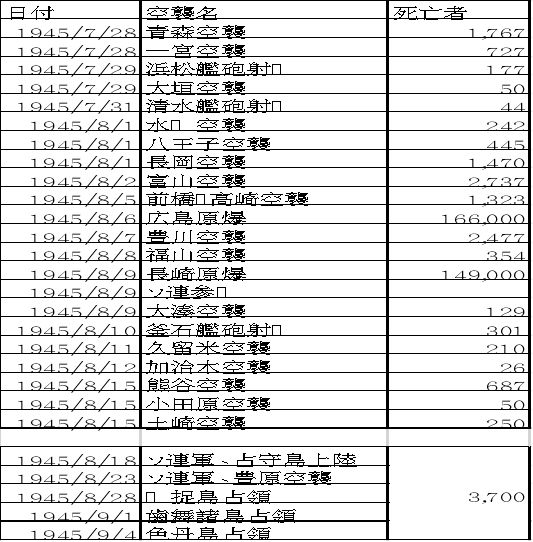
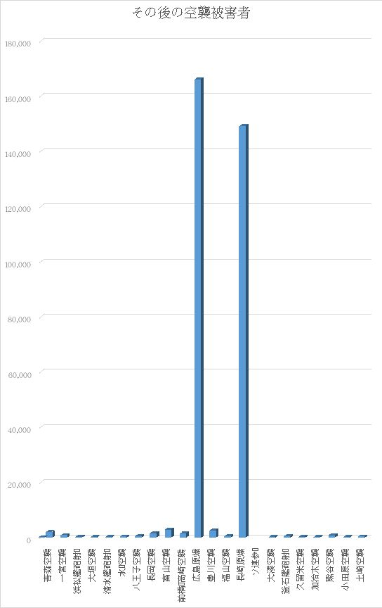
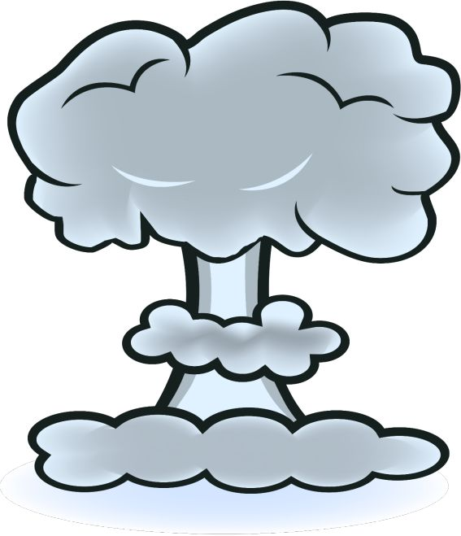

| 7月２７日に、日本が降伏していたなら・・・ 空襲 | |
| 豊川秀康 | |
| (2017) | |
７月２７日にポツダム宣言を受諾していたなら・・・
194 5 年（昭 和 2 0 年 ）7月 2 6 日にアメリカ合衆国大統領、イギリス首相、中華民国主席の名において大日本帝国（日本）に対して発された、「全日本軍の無条件降伏」等を求めた 全 1 3 か条から成る宣言。
ここで、注意していただきたいのは、ソビエトの名がないことだ。この時点で、受諾していれば、北方領土どころか、シベリア抑留もなかったのだ。
もちろん、原爆の被害もなかったし、数々の空襲の被害もなかった。
日本人は、『一億玉砕』しか頭になかったのだ。
そして、日本の敵国はアメリカ 、英国、オーストラリア 、ニュージーランド
カナダ 、南アフリカ連邦 、コロンビア 、エル・サルバドル 、コスタリカ、ドミニカ 、ニカラグア 、ハイチ 、グァテマラ 、ホンジュラス 、パナマ 、 オランダ 、キューバ 、ベルギー
194 2 年（昭 和 1 7 年） 5月 2 2 日 メキシコ
194 3 年（昭 和 1 8 年） 1月 1 7 日 イラク
7月 1 1 日 ノルウェー
1 2月4 日 ボリビア
194 4 年（昭 和 1 9 年） 1月 2 7 日 リベリア
9月 2 2 日 フィンランド
1 0月 3 1 日 ルーマニア
1 1月7 日 ブルガリア
194 5 年（昭 和 2 0 年） 2月9 日 エクアドル
2月 1 2 日 ペルー
2月 1 3 日 パラグアイ
2月 1 4 日 ベネズエラ
2月 2 2 日 ウルグアイ
2月 2 3 日 トルコ
2月 2 6 日 エジプト 、シリア
2月 2 7 日 レバノン
2月 2 8 日 イラン
3月1 日 サウジアラビア
3月 2 7 日 アルゼンチン
4月 1 2 日 スペイン 、チリ
5月 2 3 日 デンマーク
6月6 日 ブラジル
6月 2 6 日 ギリシャ
8月9 日 ソビエト連邦 、モンゴル
弱り目に祟り目とはこういうことを言います。


7月 2 8 日 青森大空襲 B2 9・ 6 1 機。死傷 者 176 7 人。焼失家 屋 18,04 5 戸（市街地 の 88 % ）。新型 の M7 4 六角焼夷弾が使用され、東北地方では最大の被害を出した。
7月 2 8日 -2 9 日 。2 回目の 一宮空襲 。午 後 1 0 時頃 、 B2 9約 26 0 機が愛知県 一宮市上空に侵入し、油脂焼夷弾の波状攻撃を行った 。2 回に及ぶ空襲で市街地面積 の 8 0 ％が灰燼に帰し、罹災戸数は全市戸数 の 8 3 ％にあた る 10,46 8 戸、罹災者は全市人口 の 7 1 ％にあた る 41,02 7 名、内死 者 72 7 名、負傷 者 4,18 7 名に達した。
7月 2 9 日 浜松艦砲射撃 。死 者 17 7 人。周辺の被害も含む。
7月 2 9 日 大垣 空襲。死 者 5 0 人、負傷者 約 10 0 人、全半壊家屋 約 4,90 0 戸、罹災者 約 30,00 0 人。大垣城、開闡寺などが焼失。
7月 2 9 日 津市 の国宝建造物である観音寺本堂、大宝院本堂（阿弥陀堂）、西来寺奥殿が戦災で焼失。
7月 3 1 日 清水 艦砲射撃。死 者 4 4 人 。7 隻の駆逐艦によるもの。
土崎空襲の爆弾破片で損傷した「首無し地蔵」
（秋田市飯島・雲祥院 ）8月1 日 水戸空襲 B2 9・ 9 9 機。死 者 24 2 人。負傷 者 129 3 人。罹災人 口5万 60 5 人。
8月1 日 八王子 空襲 B2 9・ 16 9 機。死 者 44 5 人。負傷 者 200 0 人以上。焼失家 屋 14,00 0 戸。罹災人 口 77,00 0 人。
8月1 日 長岡 空襲 B2 9・ 12 5 機。死 者 147 0 人余。焼失家 屋 11,98 6 戸。
8月2 日 富山 大空襲 B2 9・ 17 4 機。死 者 273 7 人。負傷 者 790 0 人。焼失家 屋 24,91 4 戸（市街地 の 99.5 % ）。罹災人 口 109,59 2 人。広島・長崎の原爆を除けば地方都市として最大の被害。
なお 、8月1 日から 翌2 日未明にかけて行われた 水戸・八王子・長岡・富山 に対する一斉空襲は、司令官カーチス・ルメイが自身の昇進と陸軍航空隊発足記念日を祝う目的で一斉に行われた戦略上特に意味のない作戦で 、1 日の弾薬使用量がノルマンディー上陸作戦を上回るように計算されていた。
8月5 日 前橋・高崎 空襲 B2 9・ 9 2 機。死傷 者 132 3 人。
8月5 日 佐賀 空襲
8月6 日 広島原爆 、 1 6万6 千人が死亡
当時の広島市長は、広島に赴任するときに「私は、広島市民と運命を共にする」と言って、着任された。市長は、市民１６万６千人とともに爆死されたのであった。
８月６日に、明治時代以来の軍都広島は、壊滅してしまった。それもたった一発の爆弾で・・
もし、核の報復合戦が始まったら、凄いことになるだろう・・
戦争は、拡大していく、航空機の初めての爆撃は、なんと石を落すものだった。それが、もはや、１０万人や１００万人を殺傷するものとなったのだ。
当時、広島に陣取っていた本土防衛のための第二総軍は、消えてしまった。
本土防衛は、第一総軍と第二総軍で構成されており、その片方が消滅してしまったことになる。
戦争をこれ以上続けていたら、一億特攻どころか、一方的な一億自滅になっただろう。日本人が１６万６千人死んでいるのに、アメリカ人は一人も死んでいないばかりか、ケガさえもしていない。
日本は、戦争慣れしなくて、明治以降に数回戦争をしただけで、戦争の仕方、やめ方を知らなかったこともあるが、何といってもルーズベルトが無条件降伏を強制したことで、ここまで追い込まれてしまった。
まだしも、有力な同盟国がいれば希望もあるが、この時期、日本は四面楚歌、世界中を敵にしてしまっている。正に、１９４５年は、日本にとって、建国以来の災難の連続だったのだ。
8月7 日 豊川海軍工廠空襲 死 者 247 7 人。
8月8 日 福山大空襲 B2 9・ 9 1 機。死 者 35 4 人、負傷 者 86 4 人、焼失家屋 数 10,17 9 戸、被災人 口 47,32 6 人（福山市 民 82 % が被災）。同 年6 月にはグラマ ン F6 F 艦上戦闘機によって福山海軍航空隊への機銃掃射が行われていた。
8月8 日 八幡大空襲 。 B2 9・ 12 7 機。死 者 295 2 人、焼失家屋 数 14,38 0 戸。このときの火災による煙が、翌日の原爆の投下目標を小倉から長崎に変更させる一因となった。
８月９日 ソ連参戦
8月9 日 長崎原爆 約 1 4万9 千人が死亡
8月9 日 大湊空襲。死 者 12 9 名、負傷 者 30 0 名以上。敷設艦常磐などが大破。
8月9 日 釜石艦砲射撃 。2 回目。少なくとも死 者 30 1 人。爆音は秋田市まで響いたという。
8月 1 0 日 花巻空襲、熊本空襲
8月 1 1 日 久留米空襲。日中 、 B-2 4 が市街地を空襲し、久留米駅が全焼。死者 約 21 0人 [16 ] 。焼失家 屋 4,50 6 戸。
8月 1 1 日 加治木空襲 ダグラ ス A-2 0 爆撃 機 1 8 機によ る2 回目の空襲。死 者 2 6 人。役場をはじめ、諸官庁、学校がほとんど焼失。送電線・電話線も焼け、ラジオも聞けなかった。
8月 1 3 日 長野空襲 長野市、上田市に艦載 機 6 2 機による空襲。
8月 1 4 日 熊谷空襲 B2 9・ 8 2 機。死傷 者 68 7 人。
8月 1 4 日 岩国大空襲 この空襲の帰りに光にも空襲があった。
8月 1 4 日 山口県光市 光海軍工廠空襲 死 者 73 8 人。
8月 14-1 5 日 小田原空襲 死 者 30-5 0 人。伊勢崎と熊谷を空襲し た B2 9 が帰路に余った爆弾を投下し た [17 ] 。
8月 14-1 5 日 土崎空襲 B2 9・ 13 2 機。死 者 25 0 人超、製油所全滅。最後の空襲。
は無かった・・・・
8月9 日 長崎原爆 約 1 4万9 千人が死亡。
浦上天主堂のある長崎に、核爆弾を落すなんて、アメリカはキリスト教国と言えるのだろうか。正に、アメリカ機搭乗兵はかすり傷一つおわずに、１４万９千人の日本人を消すことができたのだった。
軍国主義を取り払うために、日本人はここまでの犠牲を払うことになってしまった。

ドイツ降伏５月７日と同時に降伏していたなら・・・
194 5年5月[ 編 集 ]
5月 1 0 日 徳山大空襲 第三海軍燃料廠を狙った空襲 。 B2 9・ 11 7 機。死 者 50 0 人以上、負傷者 約 100 0 人。
5月 2 9 日 横浜大空襲 B2 9・ 47 5 機 、 P5 1 ・ 約 10 0 機。死 者 378 7 人。重傷 者 155 4 人。軽傷 者 10,83 7 人。罹災人 口 323,00 0 人。焼失 約3 万戸。その後の調査で、死者 は8千 - 1 万人にのぼることが確実と考えられている。
5月 3 1 日 台北大空襲 B2 4・ 11 7 機日本統治時代の台北市、死者 約 300 0 人。
6月1 日 尼崎空襲 死 者 23 1 人。奈良空襲。
6月 1 0 日 日立空襲 死 者 120 0 人。
6月 1 0 日 千葉空襲 B2 9 ・ 約 10 0 機。死 者 15 2 人。
6月 1 7 日 鹿児島大空襲 B2 9・ 11 7 機、焼夷 弾 81 0 トン。死 者 2,31 6 人、負傷 者 5,00 0 人以上、家屋被災 約 1 1， 60 0 戸。
6月 1 8 日 浜松空襲 死 者 172 0 人。焼失家 屋 15,40 0 戸。
6月 1 8 日 四日市空襲 B2 9・ 8 9 機。死 者 73 6 人、負傷 者 150 0 名、行方不 明 6 3 人、被災 者 47,15 3 名、焼失家 屋 11,39 0 戸。
6月 1 9 日 福岡大空襲 B2 9・ 23 9 機。罹災人 口 60,59 9 人（うち死 者 90 2 人）。罹災家 屋 12,69 3 戸。
6月 19-2 0 日 静岡大空襲 B2 9・ 13 7 機。死 者1， 95 2 人 罹災人 口 12 7， 11 9 人 焼失家 屋 3 0， 04 5 戸。静岡市（現在の葵区・駿河区）は、 計 2 6 回の空襲を受けたが、それ以外にも数えきれない程の機銃掃射など小規模な爆撃を受けている。
6月 19-2 0 日 豊橋空襲 B2 9・ 13 6 機。死 者 62 4 人
6月 2 2 日 姫路空襲（川西航空機姫路製作所とその周辺） B2 9 ・ 約 6 0 機、死 者 34 1 人、罹災 者 1022 0 人。
6月 2 2 日 水島空襲（現倉敷市） 死 者 1 1 人、重軽傷 者 4 6 人。
6月 2 2 日 各務原空襲（現航空自衛隊岐阜基地付近 ） B2 9・ 4 4 機。死 者 16 9 人
6月 2 2 日 呉空襲 工廠への爆 撃 [8 ] 死 者 160 0 人。
6月 2 6 日 奈良空襲
6月 2 8 日 呉大空襲：呉軍港空襲 。7月 2 8 日に江田島小用沖で戦艦榛名
が爆撃を受ける。
6月 2 9 日 佐世保大空襲 B2 9・ 14 1 機。焼夷弾 約 120 0 トン。死者 約 130 0 人、罹災人口 約 65,00 0 人。当日は雨で「今日は来ないだろう」という市民の不意を突き深夜に空襲された。
6月 2 9 日 岡山空襲 B2 9・ 13 7 機。死 者 173 7 人。罹災人 口 1 2 万人。罹災家 屋 25,00 0 戸。（『岡山市史』）空襲警報が出されずまったくの不意打ちであったため被害が増大した。
空襲後の青森市街
7月 1- 2 日 熊本大空襲 午 後 1 1 時以降の深夜から空襲 、 B29 15 4 機（米軍資料） ： 6 0 機（日本軍部発表）市街地の 約 20 % を焼失。死者 数 46 9 人、負傷者 数 55 2 人、罹災家屋総 数 11,00 0 戸、罹災者 数 43,00 0 人。
7月1日 - 2 日 呉市空襲 B2 9・ 15 0 機。死 者 3,70 0 人。
7月2 日 下関空襲 B2 9・ 14 3 機。死 者 32 4 人。罹災人 口 38,70 0 人。罹災家 屋 8,60 0 戸 。6月 2 9 日に続 く2 度目の空襲。
7月3 日 姫路大空襲 深夜か ら4 日未明にかけ 、 B2 9 ・ 約 10 7 機。死 者 17 3 人、罹災 者 45,18 2 人。姫路城は焼失を免れる。
7月4 日 高松空襲 B2 9・ 11 6 機。死 者 135 9 人、罹災人 口 86,40 0 人、罹災家 屋 18,91 3 戸。高松市の 約 80 % が焦土と化した。
7月4 日 徳島大空襲 B2 9・ 12 9 機 死者 約 1,00 0 人、けが人は 約 2,00 0 人、被災者 約 70,00 0 人。徳島市（当時） の 62 % が焦土と化した。
7月4 日 高知大空襲 B2 9・ 12 0 機 死 者 40 1 人、罹災家屋 約 12,00 0 戸。
7月6 日 千葉空襲 B2 9・ 12 4 機。死傷 者 1,67 9 人。
7月6 日 甲府空襲 B2 9・ 13 1 機。死 者 1,02 7 人。全 焼 17,92 0 戸。
7月7 日 清水大空襲（現在の静岡市清水区）
7月9 日 和歌山大空襲 B2 9 ・ 約 10 0 機。死者 約 120 0 人。
7月9 日 堺空襲 B2 9 ・ 約 10 0 機。死 者 186 0 人。焼 失 18,00 0 戸。
7月9 日 岐阜空襲 B2 9 ・ 約 13 0 機。死者 約 90 0 人。
7月 1 0 日 仙台空襲 B2 9・ 12 4 機。死 者 82 8 人。負傷 者 38 5 人。焼失家 屋 23,95 6 戸。詳細は項目記事を参照。
7月 1 2 日 宇都宮大空襲 B2 9・ 13 3 機、焼夷 弾 12,70 4 発。死 者 62 8 人、負傷者 約 1,15 0 人。焼失家 屋 9,49 0 戸。鹿沼空襲 死 者9 人。
7月 1 2 日 敦賀空襲 死 者 10 9 人。負傷 者 20 1 人。日本海側初の空 襲 [12]
7月 1 3 日 1 回目の一宮空襲。午 後8 時頃 、 B2 9約 2 0 機の編隊が、愛知県一宮市内北部の葉栗・西成両地区と今伊勢町に油脂焼夷弾を投下 、 2 0 数名の死者。
7月 1 4 日 釜石艦砲射撃。一回目。少なくとも死 者 51 5 人。
7月 14-1 5 日 北海道空襲 米機動部隊艦載機 約 2,00 0 機による空襲。被害は北海道全土と青森県に及んだ。青函連絡船 全 1 2 隻も被害に遭い、青函航路が途絶した。
7月 1 5 日 室蘭艦砲射撃。死 者 43 6 人。室蘭は前日にも空襲を受けたばかりだった。
7月 16-1 7 日 大分空襲 1 6 日夜半 頃 B2 9 編隊（ 約 3 0 数機）が襲来、市の中心部を 約 6,00 0 発の焼夷弾爆撃 。 2,35 8 戸が焼失。 大分はこの他に も4月 2 1 日 、5月5 日 、8月 1 0 日など本土空襲での米軍の通り道であったため度々空襲を受けた。また公式記録には残っていないものの、別府市浜脇地区も被弾したといわれている。一連の空襲での死傷者 は 1,19 3 人。
7月 1 6 日 平塚大空襲 B2 9・ 13 6 機 焼夷 弾 10,96 1 発、死 者 34 3 名 海軍火薬廠、日本国際航空工業、第二海軍航空廠平塚分工場、横須賀海軍工廠造機部平塚分工場がターゲットであったとされ、人的被害は比較的少ないが大規模な爆撃。当時の市域における面積の 約8 割、戸数の 約6 割を焼失。
7月 1 7 日 沼津大空襲 B2 9・ 13 0 機 焼夷 弾 9,00 0 発。死 者 27 4 人。沼津海軍工廠・海軍技術研究所音響研究部が置かれた同市はこの他に も7 回の空襲を経験。
7月 1 7 日 桑名空襲 桑名 は7月 2 4 日にも空襲を受けた。
7月 1 7 日 日立艦砲射撃。死 者 31 7 人。アメリカの戦 艦5 隻、軽巡洋 艦2 隻、駆逐 艦9 隻とイギリスの戦 艦3 隻によるもの。
7月 1 8 日 野島崎（千葉県白浜）艦砲射撃。死 者6 人。巡洋 艦4 隻、駆逐 艦9 隻によるもの。
7月 1 9 日 福井空襲 B2 9・ 12 0 機。死 者 1,57 6 人。
7月 1 9 日 日立空襲 B2 9・ 12 7 機、死傷 者 2,19 9 人。
7月 1 9 日 銚子空襲 B2 9・ 9 1 機。死傷 者 1,18 1 人。
7月 19-2 0 日 岡崎空襲 B2 9・ 12 6 機。死 者 20 3 人。
7月 2 4 日 半田空襲 B2 9・ 7 8 機。死 者 26 9 人。中島飛行機半田製作所を標的とした攻撃。
7月 2 4 日 、 2 8 日 津大空襲 死 者 1,23 9 人。旧市街の全域、及び、橋北地区の工場地帯が焼失。
7月 2 4 日 、 2 8 日 呉軍港空襲 米艦載 機 95 0 機 、 B2 9・ 11 0 機 航空母 艦3 巡洋 艦5 が大破沈没 死 者 78 0 人。
7月 2 5 日 保戸島空襲（大分県津久見市）米軍グラマン戦闘機が投下し た3 発のうち の1 発が授業中だった保戸島国民学校（現・津久見市立保戸島小学校）を直撃し、児 童 12 5 人、教 師2 人が即死し 、 7 0 数人の児童が重軽傷を負った。
7月 2 5 日 串本艦砲射撃。潮岬も含め、周辺は何度となく艦砲射撃を受けている。
7月 2 6 日 松山大空襲 B2 9・ 12 8 機による午 後 1 1 時か ら2 時 間 1 0 分に及ぶ夜間空襲。死者・行方不 明 25 9 人、負傷者把握不可の大惨事となった。全戸数 の 55 % であ る 14,30 0 戸を焼失。全人口 の 53 %の 62,20 0 人が罹災し、市のシンボルである松山城へも焼夷弾攻撃を受けたが、大天守は焼失を免れる。米軍機の損失はなかった（「アメリカ軍松山爆撃報告書」による）。なお、松山地方裁判所検事正から の7月 3 0 日付の報告書には、死 者 30 1 名、重軽傷 者 52 0 名、行方不 明 1 2 名、罹災民 約 82,00 0 名と記されている。
7月 2 6 日 平空襲
も無かった・・・・